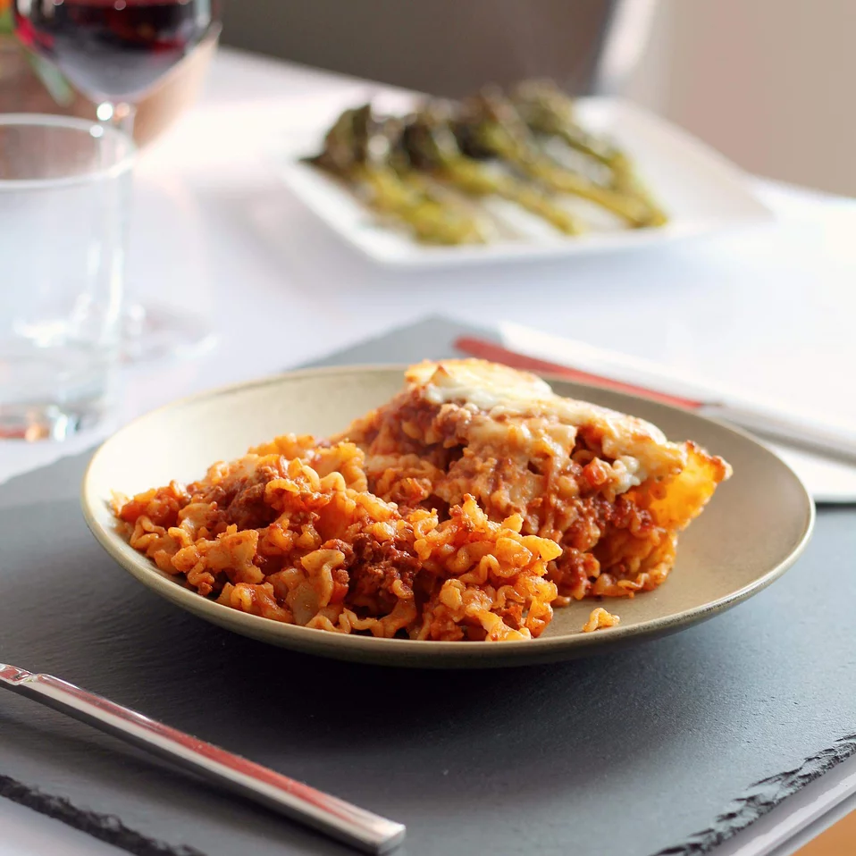

Lui's Lasagna

Description:
A tasty lasagna for all of you lodge skillet lovers. Hold on to your seasoning ladies and gentlement
this is going to be a tasty ride.
Note* Be sure to use a well seasoned skillet for this recipe. Using
an unseasoned skilled can cause the iron to leech into your food.
Ingredients:
- Ground Beef x 0.b lbs
- Spaghetti Sauce x 1/2 (28 ounce) Jar
- Diced Tomatoes x 1(14.5 ounce) can
- Onion (choped) x 1/2
- Clove of Garlic (chopped) x 1
- Dried Basil (optional) x 2 teaspoons
- Dried Oregano (optional) x 2 teaspoons
- Salt x 1 teaspoon
- Black Pepper x 1 teaspoon
- Dried malfada noodles x 2 cups
- Shredded mozarella cheese x 1 cup